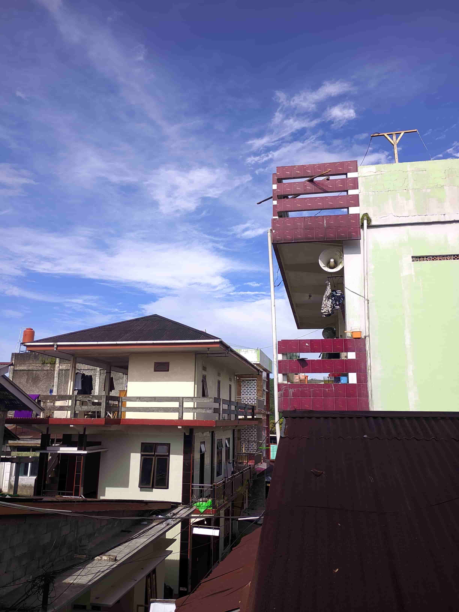
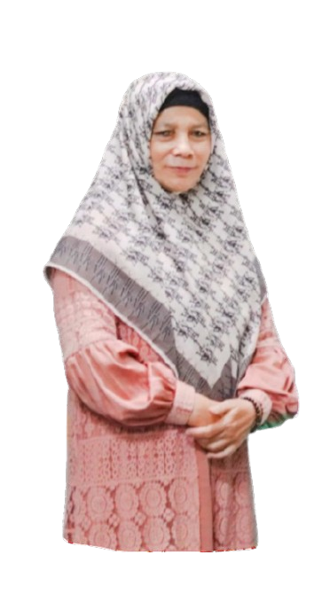

Mengenal lebih dalam perjalanan, nilai, dan dedikasi lembaga pendidikan Islam kami

Yayasan Ittihadut Tholibin merupakan lembaga yang bergerak di bidang pendidikan Islam dan menjadi payung utama bagi berbagai unit pendidikan yang dikelolanya. Yayasan ini didirikan dengan tujuan untuk mengembangkan pendidikan berbasis keislaman yang terpadu, mencakup pendidikan nonformal maupun formal, serta membentuk generasi yang berakhlak mulia dan berilmu.
Di bawah naungan Yayasan Ittihadut Tholibin, berdiri Pondok Pesantren Ittihadut Tholibin yang didirikan pada tahun 1988 oleh Dr. KH. Ikhwan Qomary, M.Ag bersama Nyai Hj. Umi Fatma, S.H., Alhdz. Pada awal berdirinya, pondok pesantren ini berfungsi sebagai tempat mengaji yang masih bergabung dengan Pondok Pesantren Tahfidzul Qur'an Al-Asya'ariyah.
Sebagai bagian dari pengembangan pendidikan formal, Yayasan Ittihadut Tholibin juga mendirikan MTs Al-Hikmah — madrasah tingkat menengah pertama yang mengintegrasikan kurikulum pendidikan umum dengan nilai-nilai keislaman, sehingga mampu mencetak peserta didik yang unggul secara akademik sekaligus berakhlak islami.
Dengan sinergi antara yayasan, pondok pesantren, dan madrasah, Yayasan Ittihadut Tholibin terus berkomitmen menjadi salah satu pilar pendidikan Islam yang berkontribusi bagi masyarakat, khususnya di wilayah Wonosobo.
Pondok ini diasuh oleh pasangan ulama yang telah mendedikasikan hidupnya untuk pendidikan Islam sejak 1988

Fasilitas lengkap disiapkan untuk menunjang kegiatan belajar dan kehidupan santri sehari-hari
Gedung asrama terpisah yang bersih dan aman, dilengkapi dengan kamar tidur, kamar mandi, dan ruang bersama.
Ruang kelas yang kondusif untuk kegiatan pembelajaran formal maupun pengajian kitab kuning.
Tempat ibadah dan kegiatan bersama yang representatif untuk sholat berjamaah dan acara-acara pesantren.
Koleksi kitab-kitab klasik dan buku pendidikan modern untuk menunjang aktivitas belajar santri.
Lapangan dan area olahraga untuk menjaga kesehatan jasmani dan semangat para santri.
Dapur, ruang makan, dan fasilitas kesehatan yang tersedia untuk kenyamanan santri mukim.
Daftarkan putra-putri Anda dan jadikan mereka bagian dari keluarga besar Ittihadut Tholibin